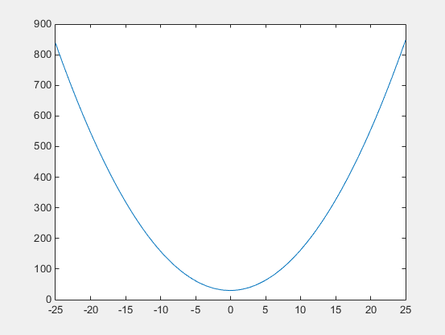
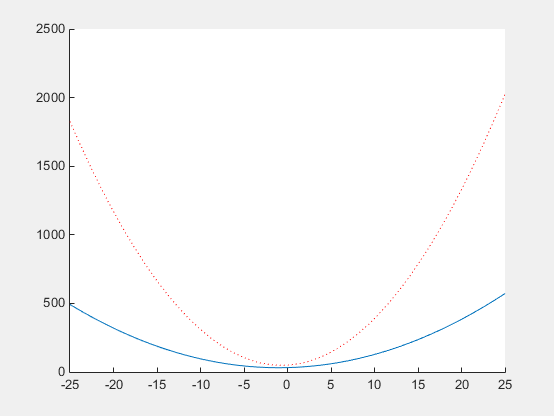

Nested Functions
What Are Nested Functions?
A nested function is a function that is completely contained within a parent function. Any function in a program file can include a nested function.
For example, this function named parent contains a nested
function named nestedfx:
function parent disp('This is the parent function') nestedfx function nestedfx disp('This is the nested function') end end
The primary difference between nested functions and other types of functions is that they can access and modify variables that are defined in their parent functions. As a result:
Nested functions can use variables that are not explicitly passed as input arguments.
In a parent function, you can create a handle to a nested function that contains the data necessary to run the nested function.
Requirements for Nested Functions
Typically, functions do not require an
endstatement. However, to nest any function in a program file, all functions in that file must use anendstatement.You cannot define a nested function inside any of the MATLAB® program control statements, such as
if/elseif/else,switch/case,for,while, ortry/catch.You must call a nested function either directly by name (without using
feval), or using a function handle that you created using the@operator (and notstr2func).All of the variables in nested functions or the functions that contain them must be explicitly defined. That is, you cannot call a function or script that assigns values to variables unless those variables already exist in the function workspace. (For more information, see Resolve Error: Attempt to Add Variable to a Static Workspace..)
Sharing Variables Between Parent and Nested Functions
In general, variables in one function workspace are not available to other functions. However, nested functions can access and modify variables in the workspaces of the functions that contain them.
This means that both a nested function and a function that contains it can modify
the same variable without passing that variable as an argument. For example, in each
of these functions, main1 and main2, both the
main function and the nested function can access variable
x:
function main1 x = 5; nestfun1 function nestfun1 x = x + 1; end end |
function main2 nestfun2 function nestfun2 x = 5; end x = x + 1; end |
When parent functions do not use a given variable, the variable remains local to
the nested function. For example, in this function named main,
the two nested functions have their own versions of x that cannot
interact with each other:
function main nestedfun1 nestedfun2 function nestedfun1 x = 1; end function nestedfun2 x = 2; end end
Functions that return output arguments have variables for the outputs in their
workspace. However, parent functions only have variables for the output of nested
functions if they explicitly request them. For example, this function
parentfun does not have variable
y in its workspace:
function parentfun x = 5; nestfun; function y = nestfun y = x + 1; end end
If you modify the code as follows, variable z is in the
workspace of parentfun:
function parentfun x = 5; z = nestfun; function y = nestfun y = x + 1; end end
Using Handles to Store Function Parameters
Nested functions can use variables from three sources:
Input arguments
Variables defined within the nested function
Variables defined in a parent function, also called externally scoped variables
When you create a function handle for a nested function, that handle stores not only the name of the function, but also the values of variables explicitly referenced by the nested function. Variables in the parent workspace that are referenced by nested functions are cleared once the last nested function handle created by that call to the parent function has been cleared.
For example, create a function in a file named makeParabola.m.
This function accepts several polynomial coefficients, and returns a handle to a
nested function that calculates the value of that polynomial.
function p = makeParabola(a,b,c) p = @parabola; function y = parabola(x) y = a*x.^2 + b*x + c; end end
The makeParabola function returns a handle to the
parabola function that includes values for coefficients
a, b, and c.
At the command line, call the makeParabola function with
coefficient values of 1.3, .2, and
30. Use the returned function handle p to
evaluate the polynomial at a particular point:
p = makeParabola(1.3,.2,30); X = 25; Y = p(X)
Y = 847.5000
Many MATLAB functions accept function handle inputs to evaluate functions over a
range of values. For example, plot the parabolic equation from
-25 to +25:
fplot(p,[-25,25])

You can create multiple handles to the parabola function that
each use different polynomial coefficients:
firstp = makeParabola(0.8,1.6,32); secondp = makeParabola(3,4,50); range = [-25,25]; figure hold on fplot(firstp,range) fplot(secondp,range,'r:') hold off

Visibility of Nested Functions
Every function has a certain scope, that is, a set of other functions to which it is visible. A nested function is available:
From the level immediately above it. (In the following code, function
Acan callBorD, but notCorE.)From a function nested at the same level within the same parent function. (Function
Bcan callD, andDcan callB.)From a function at any lower level. (Function
Ccan callBorD, but notE.)function A(x, y) % Main function B(x,y) D(y) function B(x,y) % Nested in A C(x) D(y) function C(x) % Nested in B D(x) end end function D(x) % Nested in A E(x) function E(x) % Nested in D disp(x) end end end
The easiest way to extend the scope of a nested function is to create a function handle and return it as an output argument, as shown in Using Handles to Store Function Parameters. Only functions that can call a nested function can create a handle to it.